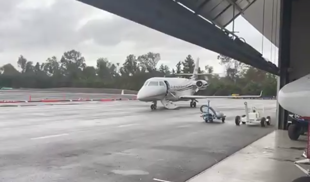
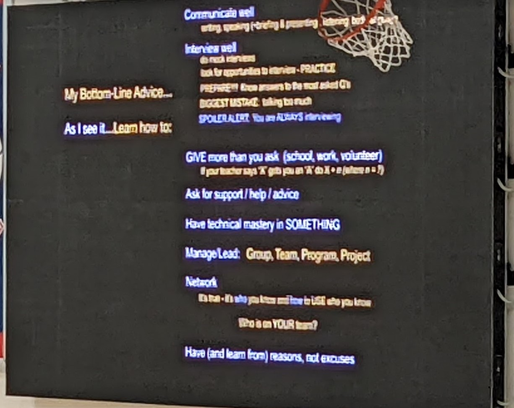
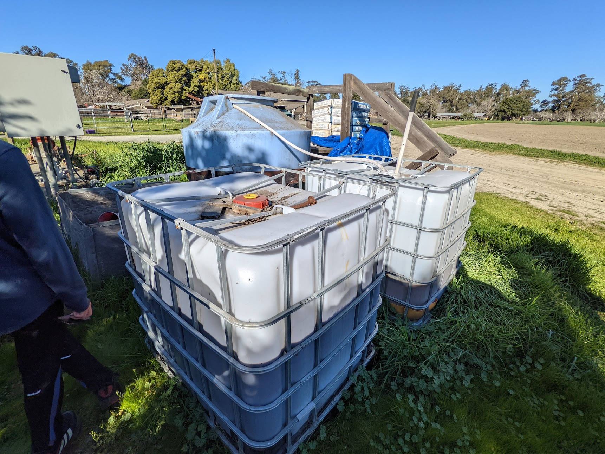

My most insightful experiences have come in mid to late high school, with my time in the DHS green earth club, the Gael Force Robotics (GFR) club, and the Environmental Technology and Sustainability club (Envirotech). I got my first and only internship to date when I got to intern for a robotics team to help them out with building and programming in preparation for a states competition, which eventually helped me get onto a team in late 2020 through to 2021. At first, interning was a bit unusual, but I got used to it, and I learned that internships can be a great way to gain experience in the real world with real world problems since they put you into the real world with real world problems. I've also had many volunteering experiences for both GFR and the DHS Green Earth Club. Currently, I've been able to volunteer twice in my freshman year before the pandemic came along, not at all in my Sophomore year as the pandemic was in full swing, and many more times in my Junior year as the pandemic started to fade and the Green Earth club bloomed back and I joined the newly sprouted Envirotech club. I have volunteered twice at GFR and many more times for the Green Earth Club and Envirotech club combined. When I volunteered for the robotics club, both times were to help run the annual Battle of the Bay competition at our school. I got to see the behind the scenes of the robotics competitions, spend time cooperating and coordinating with others, and get a better insight into the mechanics of how competitions like these are held. For Green Earth, the majority of my volunteering experiences with it were in my Junior and Senior years, as the heavy work for the club has started to accelerate. Most of these events consisted of coming after school or at lunch to the garden, and working on improving it, through setting up planter boxes, sowing seeds, designing layouts, gathering harvests, picking weeds, cleaning up the beds, adding mulch, and even meeting outside of school to purchase new plants. In Envirotech, I havent had as much time with it to volunteer, since the major project I'm working on in the club only started late in my Junior year, and It only started picking up speed at the beginning of 2023, but now that more people have joined and we have enough funds and planning to set up the area, we can start construction on it's first major project, an automated greenhouse. So far I have come to meetings to help with cleaning up the area for the greenspace, installing fencing and a fence gate, adding soil to the ground, and trimming trees near the back to clear space and get compost.
Now, moving on from my volunteer experience, I’d like to talk about the various guest speakers and field trips I have attended, both before and during the Engineering Academy.
In Freshman year, I got to listen to a few speakers that we had over the course of the first 2020 quarantine “break”. The first speaker, Cesar Nicola, called all the way from South America to talk about a couple of types of software development called scrum and agile, which are used to help coordinate a team to get it to function best. The second speaker, Joe Vierra, met (online) with us to talk about business startups, how they work, what most of them get wrong, and how to fix them and make them into sustainable companies. Both of these speakers were pretty incisive, as they helped me see how to work with a team better while in the real world.
During my time in the engineering program, I have met a number of industry professionals through workplace field trips and guest speakers. Currently, I have attended four field trips (one in person and three virtual) and six guest speakers throughout my time with the academy.
My first virtual field trip was a Livermore aviation tour, held by Jim Berry. In the Tour, we were shown the inner workings of an airplane hanger, how the pilots of airplanes transfer between flights, and the experiences of flying from current and old times. The field trip was surprisingly in depth and covered a lot of the different benefits and activities that a new pilot would do. It also showed off a way that planes were conceptualized and tested with the Robot Garden, which had students and young designers get to build and design small prototype planes and drones. Even though I myself am not looking forward to a career in aviation, I did really enjoy the field trip, as it showed the many benefits and opportunities that new pilots are allowed, and was overall very engaging and enjoyable.

I also attended a guest talk with Gracie Ermi. The topic of the talk was about the intersection of machine learning and marine biology. When I was younger, I was always interested in marine biology and looking at the different types of marine mammals and fish, so I thought it would be interesting to see machine learning being used in marine biology to locate whales. Recently at the time, I had gone on a whale watching trip in Monterey bay, so I know that it can be difficult to spot and identify whales from the surface, so seeing machine learning being used to spot and track whales in order to protect them seems very interesting.
The first virtual field trip of my Junior year was a virtual tour of a wastewater treatment plant with Judy Zavadil, which was provide dby my Environmental Sustainability class. In this field trip, she went through all the various parts of the nearest wastewater treatment plant at our school. She showed us the preparatory stage, the primary treatment, the secondary treatment, and what happens after the water is filtered. In the preparatory stage, they filter out the large solids and send them to landfill. In the primary treatment, they filter out even finer solids through a slow moving conveyer where the particles can settle into layers. In the secondary treatment, they put the water through nutrient cleaning bacteria and infuse the water with oxygen so the bacteria can grow and thrive. Finally, the cleaned water is sent to a chemical treatment plant to prepare it to become recycled water, also known as tertiary treatent. This was definetly an interesting field trip, as I had not put much thought into wastewater prior to then.
The first virtual talk I attended in Junior year was a talk by Stephen McCord on local water issues, also provided by Environmental Sustainability. This presentation was more of a general presentation covering environmental science and study areas, and specifically which areas need to be covered when talking about water management in the future. The areas he talked about for water management were groundwater managing, water conservation and reuse, dam safety, lake quality, automated monitoring, data management, and climate change resistance. He also talked about some of the various trips he has been on around the world helping other places with their local water issues such as Australia, Africa, and various places in the Americas.
The next presentation I saw was a presentation from guest speaker Emily Gaston on GIS, or Geographic Information Sciences, once again provided by Environmental Sustainability. GIS is a technology often used in cartography, or the study of mapmaking, and as we had just entered a unit on GIS in Environmental Sustainability, this talk would serve as a very nice introduction to the subject. Gaston's main job at the time was to collect special data from sattelites, usually about watersheds, and analyze it in interesting ways. Often times they used this data to create simulations of watersheds in order to study them and protect them. In the talk, she taught us the basics of mapmaking, which were to include a legible legend, to keep the map simple, to use reasonable color choices and to make sure to have metadata about the map, aka documentation. She also showed us story maps, which were maps that were presentable and interactable with visual representations of the data in those maps. Overall, I found the presentation mildly interesting, and at the time it was useful for the unit in class, but I'm not sure whether cartograohy or GIS is something I'll want to pursue in the future.
The next guest speaker of my Junior year, and my fourth overall, was a presentation by Donald James about working at NASA. He was a current engineer at NASA, and he wanted to give a presentation on how to succeed in life as he thought he had. According to him, while things like perserverance and intelligence are both important steps to success, they aren't the main keys to success. His idea was that success came from social skills. Having good manners and being able to talk to people by being nice was really important to his success, more so than money. Being smart and persistent is still an important part of it, but just being smart without any social skills won't get you anywhere. Being able to take lots of interviews, having good manner skills, being able to give instead of take and listen more than talk are all key components to succeed in life. He even wrote a book on focusing on manners because of how much he believed manners would help one succeed. However, charisma alone won't get you to the top either, it's just another important part of the pie, just like intelligence and perserverance. In my opinion, I personally think that being able to communicate well with others is just as important as he made it out to be.

The first in person field trip I went on was a tour to Dig Deep Farms, a small farm that grows and sells its own crops using nonconventional farming. In the tour, we got to see the various components of the farm, from the animals and the animal pens, the compost piles, the fields to be planted with crops, the equipment to plant and manage the crops, the nursery, and the marketplace to sell all the plants. They also tend to use environmentally friendly methods to deal with the lack of conventional farming methods, such as integrated pest management. I found the experience really insightful into how modern day farms work and it got me excited to work with farming in the future.

The fifth guest speaker I attended was a talk by Lindy Schmidt on earth science at NASA, which was the last talk I attended that was from Environmental Sustainaility. The main areas for earth science in NASA are technology, flight, research and analysis, data and computations, and applications, and she specializes in measuring the biosphere. The applications of earth science tend to focus on agriculture, disasters, ecological forecasting, health and air quality, and water resources, with some of the newer areas being climate resilience, wildfires, and environmental justice. Schmidt also worked with GIS and remote sensing, helping cashmere goat herders in Mongolia with avoiding land struck by climate change to help keep their goats healthy, and helping the Navajo nation with an extreme drought by helping identify drought stricken areas to recieve government help. I thought that the work they were doing was really cool and interesting, but its not really the type of work for me.
My last field trip from Junior year (and fourth overall) was a virtual field trip to LLNL for a job shadow day. This tour was essentially just a tour of the Lawrence Livernmore National Laboratory, where we got to hear a little history lesson about the lab itself, some of the jobs of some of the employees that came to speak to us, and a presentation about how NIF, a part of the lab, worked, fully 3d modeled and all. The National Ignition Facility (NIF for short) is a facility that is used for nuclear fusion, and which holds a lot of lasers and the largest and most energetic laser in the world. The lasers travel roughly a miles distance being amplified before being redirected into the center to create x-rays and attempt to create nuclear fusion on earth. There are a lot of safety precautions taken there, as well as a supercomputer to help with models of experiments. Overall, I found this tour quite fascinating as an insight into how LLNL and nuclear fusion works.
References may be available upon request